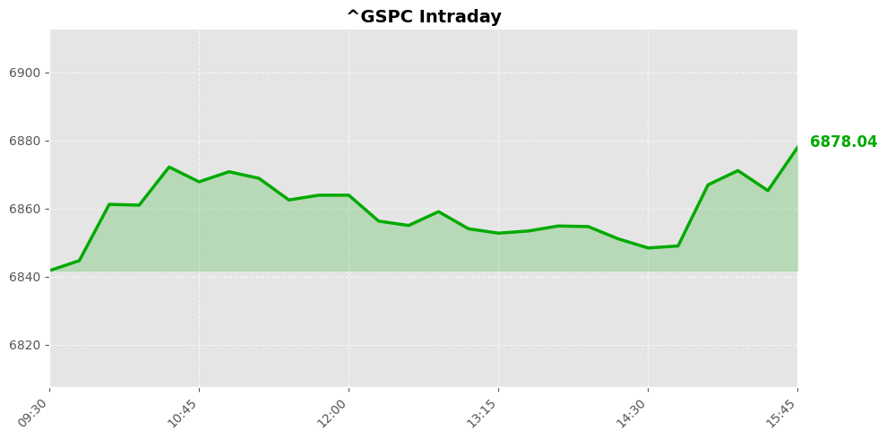

Daily Market Briefing
Market Overview



Market Analysis
The recent market performance reflects a cautious sentiment among investors, with all major indices experiencing declines amid heightened volatility. The NASDAQ Composite closed at approximately 22,668 points, down nearly 210 points or 0.92%, indicating a broad retreat in technology and growth stocks. This sector-specific softness may be driven by concerns over interest rate trajectories, inflationary pressures, or geopolitical uncertainties impacting tech valuations.
Meanwhile, the Dow Jones Industrial Average declined about 521 points, or 1.05%, closing near 48,978. The steep drop suggests increased risk aversion, possibly fueled by macroeconomic data pointing to slower economic growth or concerns over corporate earnings outlooks. The industrial and cyclical sectors embedded within the Dow appear to be under pressure, reflecting investor concerns about the economic cycle's momentum.
The S&P 500, serving as a broader market barometer, fell roughly 30 points, or 0.43%, ending at around 6,878. This moderate decline indicates that while investor sentiment is cautious, the market's overall risk appetite remains resilient, with defensive sectors likely providing some support.
Overall, the market trend suggests a period of consolidation amid ongoing macroeconomic uncertainties. Investors are likely weighing the prospects of future monetary policy adjustments, inflation management, and global geopolitical developments. Despite the declines, the relatively mild pullbacks across indices imply that markets are not in a state of panic but are instead adjusting to new information and reassessing valuation levels. Continued monitoring of economic indicators and central bank communications will be crucial to understanding the potential for future volatility or recovery.
Today's Headlines
News Analysis
Market Focus Points Today
-
Iran Conflict and Energy Markets: The escalation of tensions following recent U.S.-Israel strikes on Iran has heightened geopolitical risks, particularly around Iran’s oil exports and the Strait of Hormuz. Prediction markets suggest oil prices may surge past $70 per barrel, signaling trader expectations of significant supply disruptions.
-
Crude Oil Price Dynamics and Supply Disruption Risks: Futures trading indicates market anticipation of a potential supply shock, with Saudi Aramco's shares rising amid reopening of the Saudi oil market. The possibility of prolonged closure of the Strait of Hormuz fuels fears of a 1970s-style energy crisis, possibly pushing oil prices toward $100.
-
Market Reactions and Speculation: Prediction markets like Kalshi and Polymarket are actively reflecting expectations about oil prices and geopolitical developments, although recent allegations of insider trading and market manipulation have sparked controversy, potentially undermining market credibility.
-
Equity Market Sentiment: U.S. stocks are exhibiting caution amid Iran-related jitters and an upcoming crucial jobs report. The market’s psychological landscape is described as somewhat dystopian, driven by fears of disrupted energy supplies and broader macroeconomic uncertainties.
-
Economic and Industry Outlook: Key earnings reports from retail giants and the impact of AI-related job disruptions are also influencing market sentiment. There is cautious optimism about a retail recovery, but concerns about automation’s long-term effects on employment persist.
Potential Market Impact Factors
- Geopolitical Risks: Elevated tensions in the Middle East, especially around Iran, are a primary driver of market volatility. Any escalation could lead to sharp spikes in oil prices, affecting energy stocks and broader inflation expectations.
- Supply Chain Disruptions: The Strait of Hormuz is a critical chokepoint for global oil shipments. Any disruption here could trigger energy shocks reminiscent of the 1970s, impacting global economic growth.
- Market Manipulation Concerns: Allegations of insider trading in prediction markets could erode investor confidence, particularly in markets driven by speculative bets on geopolitical outcomes.
- Economic Data Releases: The upcoming jobs report and corporate earnings, especially from retail, will influence risk sentiment and sector-specific performance, adding layers of complexity to market dynamics.
- AI and Employment Trends: The debate over AI’s impact on jobs remains a significant macroeconomic concern, influencing investor perceptions of technological investment and economic resilience.
Industry Trends Worth Noting
- Energy Sector Volatility: The current geopolitical crisis underscores the importance of energy security and could accelerate investments in alternative energy sources, while traditional oil companies may experience increased volatility.
- Speculative Markets and Regulation: The controversy over prediction markets hints at a growing tension between innovative financial tools and regulatory oversight, which could shape future market infrastructure.
- Retail Industry Recovery: Earnings from major retail chains will shed light on consumer spending trends, which are critical indicators of economic health as the sector navigates post-pandemic recovery.
- AI and Automation: The ongoing debate about AI’s impact on jobs suggests a potential shift toward increased automation, prompting industries to evaluate workforce strategies and technological investments.
In conclusion, the market is currently navigating a complex landscape shaped by geopolitical tensions, supply chain risks, speculative trading, and macroeconomic indicators. Vigilance around energy prices and macroeconomic data releases will be key to understanding the trajectory of financial markets in the near term.
Economic Indicators
Inflation Indicators
Employment Indicators
Consumer Indicators
Community Hot Stocks
| Rank | Symbol | Mentions | Source |
|---|---|---|---|
| 1 | HIT | 61 | |
| 2 | LUCK | 48 | |
| 3 | AMD | 40 | |
| 4 | NVDA | 39 | |
| 5 | USA | 38 | |
| 6 | CARE | 36 | |
| 7 | PUMP | 34 | |
| 8 | MIND | 32 | |
| 9 | VS | 31 | |
| 10 | NET | 30 | |
| 11 | MAX | 30 | |
| 12 | TURN | 30 | |
| 13 | GROW | 28 | |
| 14 | SAFE | 28 | |
| 15 | DE | 26 | |
| 16 | PRE | 25 | |
| 17 | FACT | 24 | |
| 18 | AIN | 21 | |
| 19 | FAST | 20 | |
| 20 | TACO | 19 |
Market Outlook
Given the recent market data and news landscape, the near-term outlook for the next 1-2 trading days suggests a cautious to slightly bearish sentiment. Major U.S. indices—NASDAQ, Dow, and S&P 500—have all experienced declines, with the NASDAQ falling approximately 0.92%, Dow dropping over 1%, and the S&P 500 declining roughly 0.43%. This broad-based sell-off indicates heightened investor risk aversion, likely fueled by geopolitical tensions and macroeconomic uncertainties.
The key driver appears to be the escalating Iran conflict, which has intensified fears of supply disruptions in the oil market. News of crude oil prices potentially surpassing $70 per barrel underscores concerns over energy supply stability. The geopolitical situation at critical energy chokepoints, combined with reports of Iran's escalating actions, has traders positioning for possible supply shocks, which could sustain upward pressure on oil prices.
Market risk factors to monitor include: - Ongoing Iran-related tensions, especially any escalation that could further threaten regional stability and energy supplies. - The upcoming U.S. jobs report, which could influence Federal Reserve policy expectations—particularly concerning inflation and interest rate trajectories. - Developments in AI sector layoffs, which may add to market volatility and sentiment shifts, especially if layoffs signal broader economic slowdown concerns.
Investors should focus on the resilience of energy stocks and sectors sensitive to geopolitical risk, alongside keeping an eye on macroeconomic indicators that could influence monetary policy. A risk-off environment may persist in the short term, with increased volatility likely until clarity emerges on Iran tensions and economic data. Maintaining a cautious stance, with a focus on diversification and risk management, is advisable during this turbulent period.
Follow Us

Scan to follow StockGate
For more US stock market insights